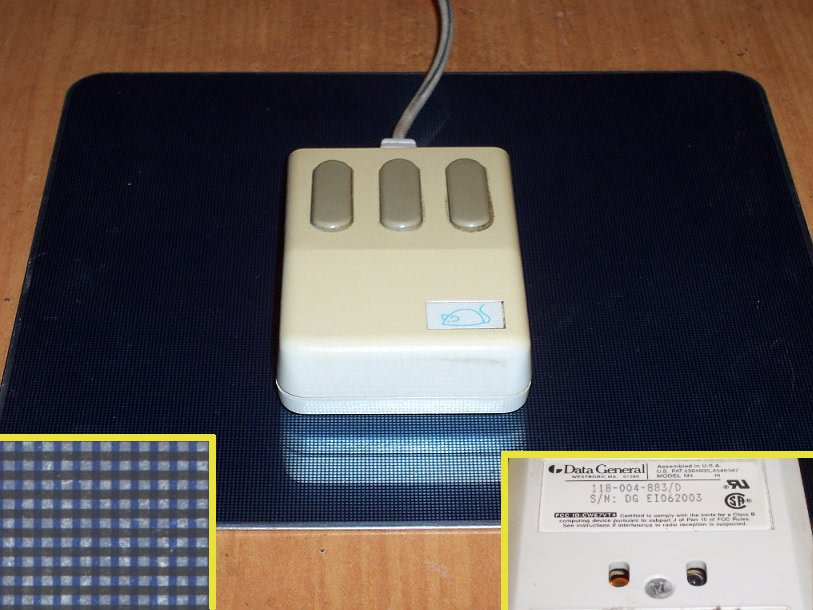

Mouse Systems Optical Mouse
The first optical mouse, chained to its printed grid pad

Overview
An optical mouse senses movement relative to a surface using a light source and a detector, with no moving parts for tracking. Two inventors independently demonstrated the first examples in December 1980. Steve Kirsch — then an MIT student, later founder of Mouse Systems and of Infoseek — built the version that was commercialized: an infrared LED and a four-quadrant infrared sensor detected grid lines printed with infrared-absorbing ink on a special metallic mousemat, while predictive algorithms in the mouse's own CPU worked out speed and direction over the grid. Sold by Mouse Systems for PC compatibles from 1982, it was also rebranded as OEM equipment by Sun Microsystems and Data General.
The other early type was Richard F. Lyon's at Xerox PARC, a 16-pixel visible-light image sensor with integrated motion detection on a single MOS chip. The two behaved very differently: the Kirsch mouse used an x-y coordinate system embedded in the pad, so it would not work correctly when the pad was rotated, whereas the Lyon mouse tracked relative to the mouse body, like a mechanical mouse. It is the Kirsch device that survives in the historic record as the first commercial optical mouse.
Deep dive
The defining interaction of the Kirsch optical mouse was its absolute dependence on its printed pad. Cursor position was computed against the grid lines printed on a metallic surface — not relative to the mouse body. Lift it off the pad and it lost all tracking; rotate the pad and the x-y frame rotated with it. The user was literally tethered to a map of screen space printed beneath their hand, a deliberate inversion of the free-rolling mechanical mouse.
The optical design eliminated the mechanism users cursed most: the rolling ball and sensor wheels that picked up dirt, skipped, and had to be taken apart and cleaned. The Kirsch mouse was solid-state for tracking, trading the ball for a printed grid and a prediction algorithm. It proved, years before consumer LED mice, that optics could replace mechanics.
The Kirsch mouse is the direct, concrete ancestor of every modern optical and laser mouse, and a counterpoint to the museum's touch and graphics-tablet entries, which likewise bind input to a physical surface. It sits naturally among the museum's pointing-lineage artifacts (Summagraphics Bit Pad, GrafBar Sonic Digitizer) as the mouse that had to stay on its own paper map.